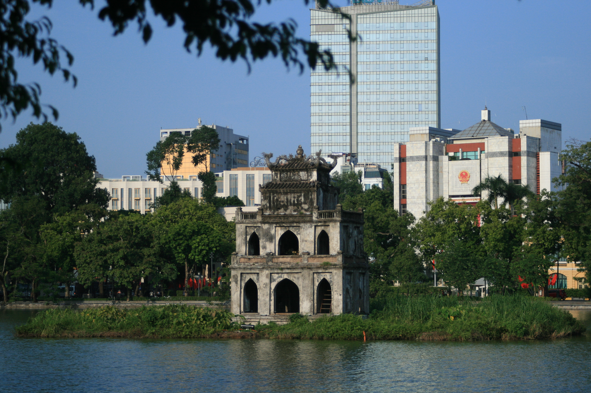
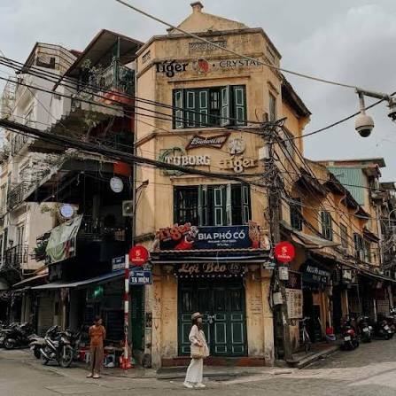
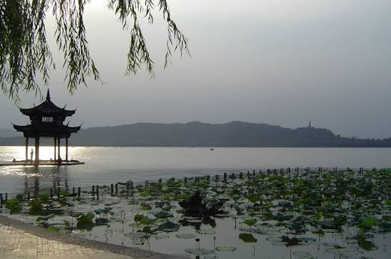

Famous Places
Hanoi has many beautiful and historic places. Here are some popular destinations to explore.

Hoan Kiem Lake
Hoan Kiem Lake is one of the most famous landmarks in the center of Hanoi.

Temple of Literature
The Temple of Literature is a historic site dedicated to education and Vietnamese culture.

Hanoi Old Quarter
The Old Quarter is known for its busy streets, traditional shops, and local culture.

West Lake
West Lake is a large lake where visitors can enjoy relaxing views and explore nearby attractions.